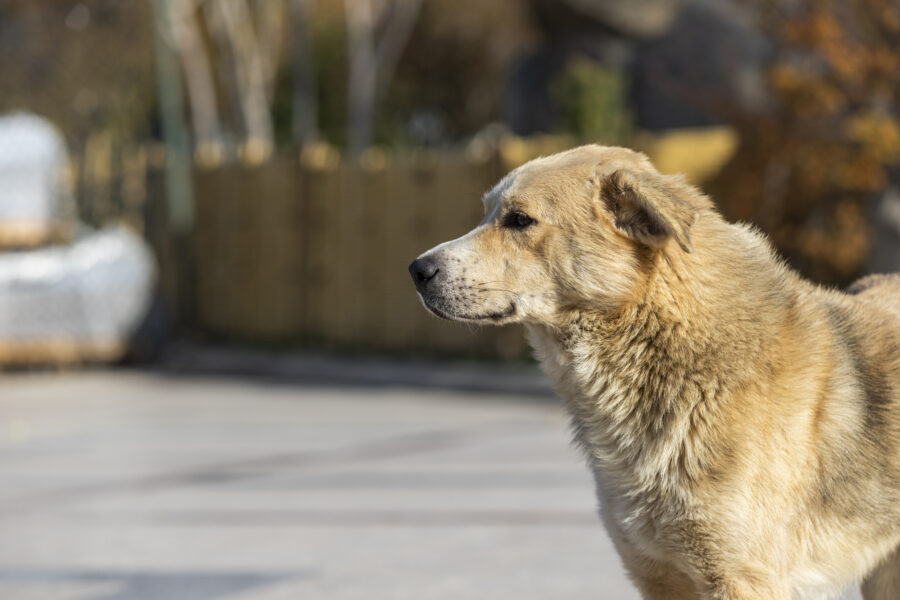

Adote seu melhor amigo:
Presentear alguém querido com animais de estimação, especialmente crianças, é uma prática muito comum, onde a intenção, muitas vezes, é a melhor possível. De fato, diversos estudos comprovam que a convivência com um animal de estimação pode ser uma das experiências mais significativas na infância, contribuindo para o desenvolvimento psicológico, cognitivo e socioemocional da criança. O contato com os animais ensina lições valiosas sobre responsabilidade, empatia e respeito pela vida. No entanto, o que muitos não consideram é o impacto a longo prazo desse “presente”.
Você sabia que cerca de 30% dos animais adotados são devolvidos em menos de um ano? Isso acontece, em grande parte, porque muitas adoções são feitas de forma impulsiva, especialmente quando se trata de filhotes. Eles costumam ser entregues para famílias pequenas e fofas. No entanto, após 4 ou 5 meses, quando surgem as responsabilidades reais de cuidado, como lidar com as necessidades fisiológicas, questões comportamentais ou a falta da interação específica, muitos acabam sendo retornos.
É necessário entender que a adaptação de um animal exige paciência e comprometimento. E, acima de tudo, é fundamental ter a consciência de que ele não pode ser considerado um presente ou um objeto envolvido diante de desafios.
Animais e crianças: uma relação de responsabilidade:
Dar um animal de presente a alguém significa oferecer um compromisso a longo prazo, que se estende por toda a vida do pet. Gatos, por exemplo, vivem em média entre 12 e 20 anos, e cães entre 10 e 15 anos. Crianças ainda não têm a maturidade ou discernimento necessário para entender que receber um pet de presente não é o mesmo que ganhar um brinquedo. Com o tempo, elas podem perder o interesse e deixar de se envolver.
Frequentemente, os pais acabam assumindo as responsabilidades, o que pode resultar, em alguns casos, no abandono ou em maus-tratos. Isso acontece por diversos motivos: falta de tempo, recursos, conhecimento ou, até mesmo, por desinteresse em atender às necessidades do animal.
Isso não significa que a criança não possa participar nos cuidados do pet, mas essa responsabilidade deve ser leve, orientada, e não imposta. Por isso, é importante conversar com as crianças sobre o compromisso que vem com a adoção de animais, para que elas compreendam que este é na verdade como um novo membro da família.Ao invés de optar por presentear com um animal de estimação, o que pode ter sérias consequências para a vida do animal, toda a família pode se engajar em uma adoção responsável. Isso significa que todos devem participar do planejamento e do processo de adoção, garantindo que a decisão seja consciente e bem pensada.
